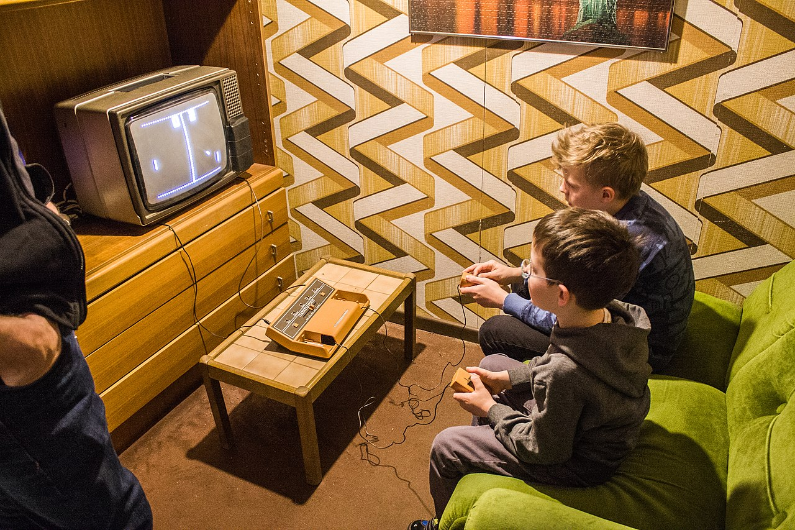

Pong is a table tennis themed twitch arcade sports video game, featuring simple two-dimensional graphics,
manufactured by Atari and originally released on 29 November 1972. It was one of the earliest arcade video games;
it was created by Allan Alcorn as a training exercise assigned to him by Atari co-founder Nolan Bushnell, but Bushnell and Atari co-founder
Ted Dabney were surprised by the quality of Alcorn's work and decided to manufacture the game. Bushnell based the game's concept on an electronic
ping-pong game included in the Magnavox Odyssey, the first home video game console. In response, Magnavox later sued Atari for patent infringement.
Pong was the first commercially successful video game, and it helped to establish the video game industry along with the Magnavox Odyssey.
Soon after its release, several companies began producing games that closely mimicked its gameplay. Eventually, Atari's competitors released new types of
video games that deviated from Pong's original format to varying degrees, and this, in turn, led Atari to encourage its staff to move beyond Pong and produce
more innovative games themselves.
Pong was the first game developed by Atari. After producing Computer Space, Bushnell decided to form a company to produce more games by licensing ideas to other companies. The first contract was with Bally Manufacturing Corporation for a driving game. Soon after the founding, Bushnell hired Allan Alcorn because of his experience with electrical engineering and computer science; Bushnell and Dabney also had previously worked with him at Ampex. Prior to working at Atari, Alcorn had no experience with video games.Bushnell had originally planned to develop a driving video game, influenced by Chicago Coin's Speedway which at the time was the biggest-selling electro-mechanical game at his amusement arcade. However, Bushnell had concerns that it might be too complicated for Alcorn's first game.
Atari engineer Allan Alcorn designed and built Pong as a training exercise
To acclimate Alcorn to creating games, Bushnell gave him a project secretly meant to be a warm-up exercise.Bushnell told Alcorn that he had a contract with General Electric for a product, and asked Alcorn to create a simple game with one moving spot, two paddles, and digits for score keeping.In 2011, Bushnell stated that the game was inspired by previous versions of electronic tennis he had played before; Bushnell played a version on a PDP-1 computer in 1964 while attending college. However, Alcorn has claimed it was in direct response to Bushnell's viewing of the Magnavox Odyssey's Tennis game. In May 1972, Bushnell had visited the Magnavox Profit Caravan in Burlingame, California where he played the Magnavox Odyssey demonstration, specifically the table tennis game.Though he thought the game lacked quality, seeing it prompted Bushnell to assign the project to Alcorn.
Dedicated Pong consoles made their way to various countries, like the Soviet Turnir.
The Pong arcade games manufactured by Atari were a great success. The prototype was well received by Andy Capp's Tavern patrons; people came to the bar solely to play the game. Following its release, Pong consistently earned four times more revenue than other coin-operated machines.Bushnell estimated that the game earned between $35 and $40 per day (i.e. around 160 plays daily per console at $0.25 per play), which he described as nothing he'd ever seen before in the coin-operated entertainment industry at the time. The game's earning power resulted in an increase in the number of orders Atari received. This provided Atari with a steady source of income;
the company sold the machines at three times the cost of production. By 1973, the company had filled 2,500 orders, and at the end of 1974, sold more than 8,000 units. The arcade cabinets have since become collector's items with the cocktail-table version being the rarest. Soon after the game's successful testing at Andy Capp's Tavern, other companies began visiting the bar to inspect it. Similar games appeared on the market three months later, produced by companies like Ramtek and Nutting Associates. Atari could do little against the competitors as they had not initially filed for patents on the solid state technology used in the game. When the company did file for patents, complications delayed the process. As a result, the market consisted primarily of "Pong clones"; author Steven Kent estimated that Atari had produced less than a third of the machines. Bushnell referred to the competitors as "Jackals" because he felt they had an unfair advantage. His solution to competing against them was to produce more innovative games and concepts.